Nyzo version 573 (commit on GitHub) adds cycle-transaction functionality for blockchain version 2.
This version affects all run modes.
The ApprovedCycleTransaction class, as the comment explains, encapsulates a reduced record of approved cycle transactions. This is stored in the balance list to allow implementation of NTTP-3/3.
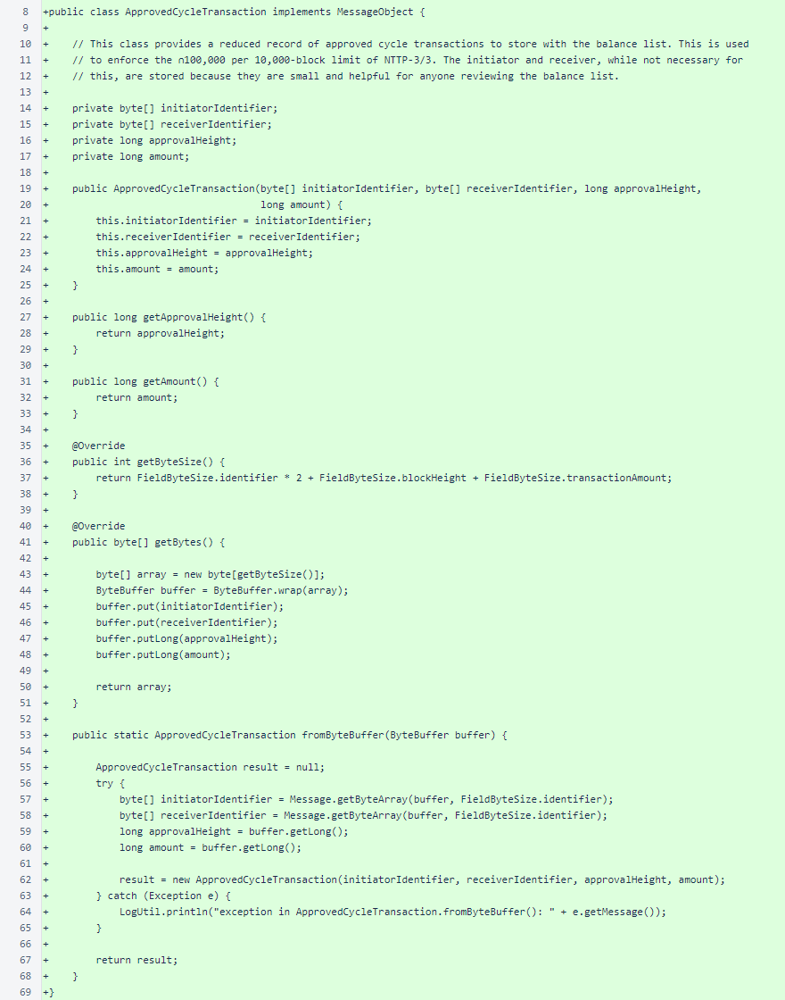BalanceList has two new fields. The pendingCycleTransactions map allows cycle transactions to accumulate votes on the blockchain, and the recentlyApprovedCycleTransactions list assists in implementation of the 10,000-block cumulative cycle transaction limit of ∩100,000.
Before blockchain version 2, these fields are both empty.
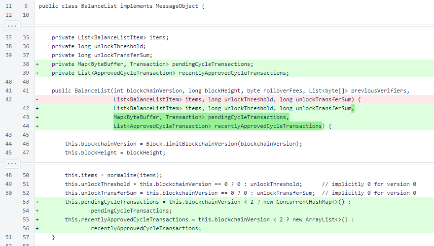In the BalanceList.getPreviousVerifiers() accessor, a new list is no longer created. While creating copies of mutable fields is good object-oriented practice, it can be inefficient. Instead, to only create copies when necessary, the responsibility for creating a copy is typically shifted to the client of the class in the Nyzo codebase. This allows the client to create a copy only when mutating the object.
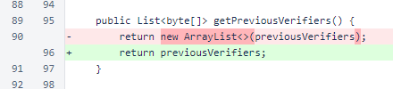Accessors for the new BalanceList fields were added.
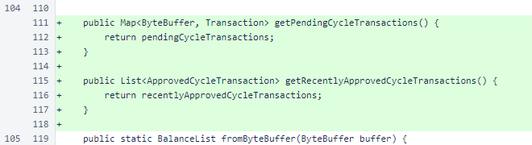In BalanceList.fromByteBuffer(), the new fields are read for blockchain versions 2 and above.
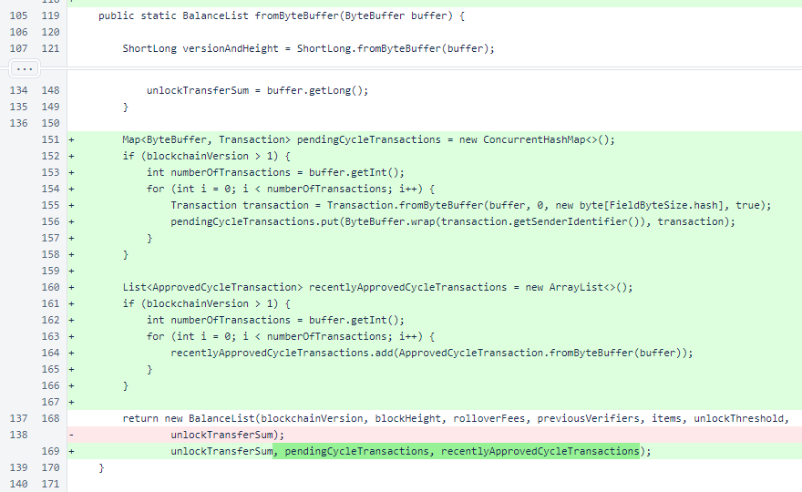In BalanceList.getByteSize(), the new fields are considered.
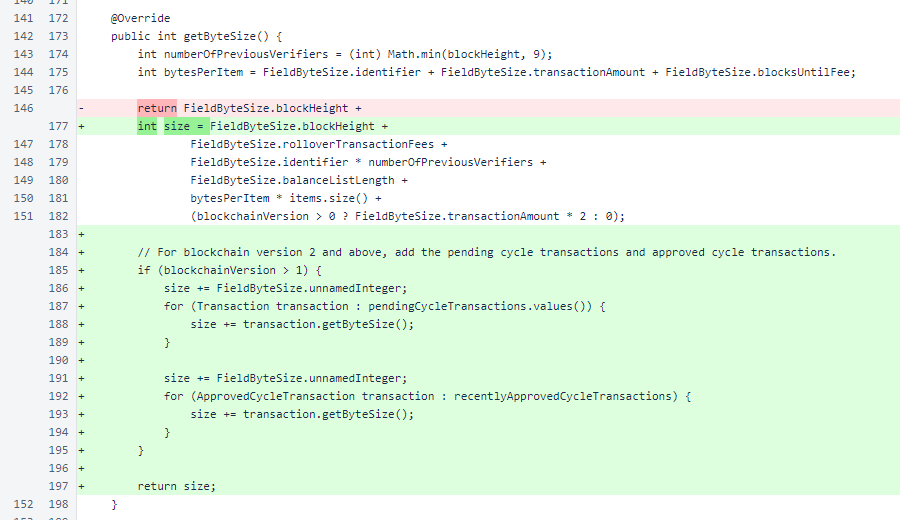In BalanceList.getBytes(), the new fields are added. To ensure a consistent binary representation, the pending transactions are sorted on identifier.
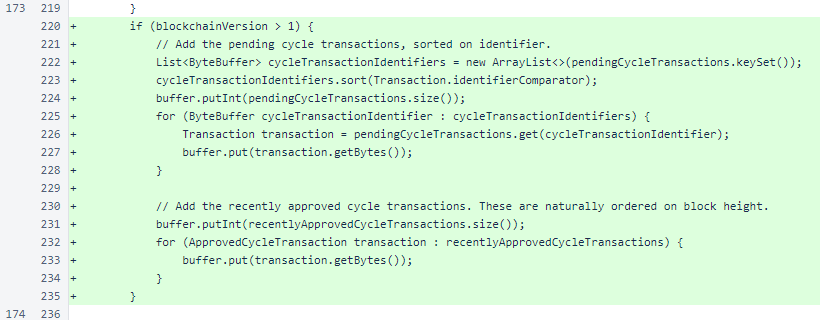In BalanceManager.approvedTransactionForBlock(), a condition was added to accept cycle-signature transactions in blockchain version 2 and above. These transactions allow cycle-transaction signatures to be placed on the blockchain immediately, eliminating the need to bundle the signatures with the transactions.
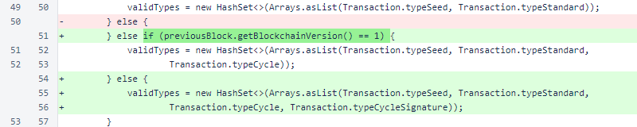Later in BalanceManager.approvedTransactionForBlock(), an exception to the µ1 minimum was added for cycle-signature transactions. These transactions do not even have amounts specified. In memory, though, the amount field is always 0.
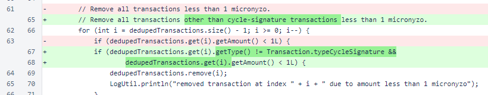When sorting transactions to limit block size in BalanceManager.approvedTransactionForBlock(), cycle-signature transactions are promoted to the top of the list. Without this modification, these transactions would have been placed at the bottom of the list and at risk of removal from large blocks.
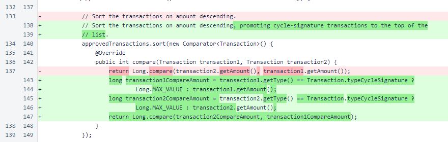In BalanceManager.enforceCycleTransactionRules(), a condition was added to remove all cycle transactions from out-of-cycle verifiers. Also, conditions were added to ensure that cycle-signature transactions are only accepted from in-cycle verifiers and in the appropriate blockchain versions. These rules are partially or fully redundant with other transaction protections, but having them in this method improves the verifiability and robustness of the code.

Later in BalanceManager.enforceCycleTransactionRules(), a condition was added to only apply the old cycle-transaction rules to blockchain version 1. Cycle transactions are processed differently in blockchain version 2. This code is unchanged aside from the added condition and resulting indentation changes.
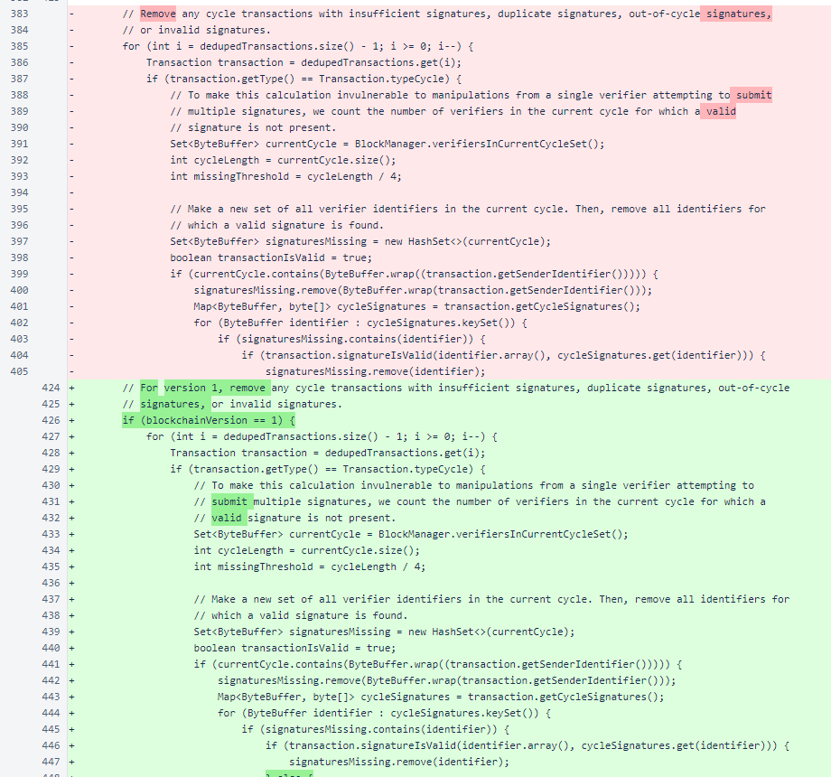Git's unfortunate handling of indentation changes continues. This code is also unchanged.
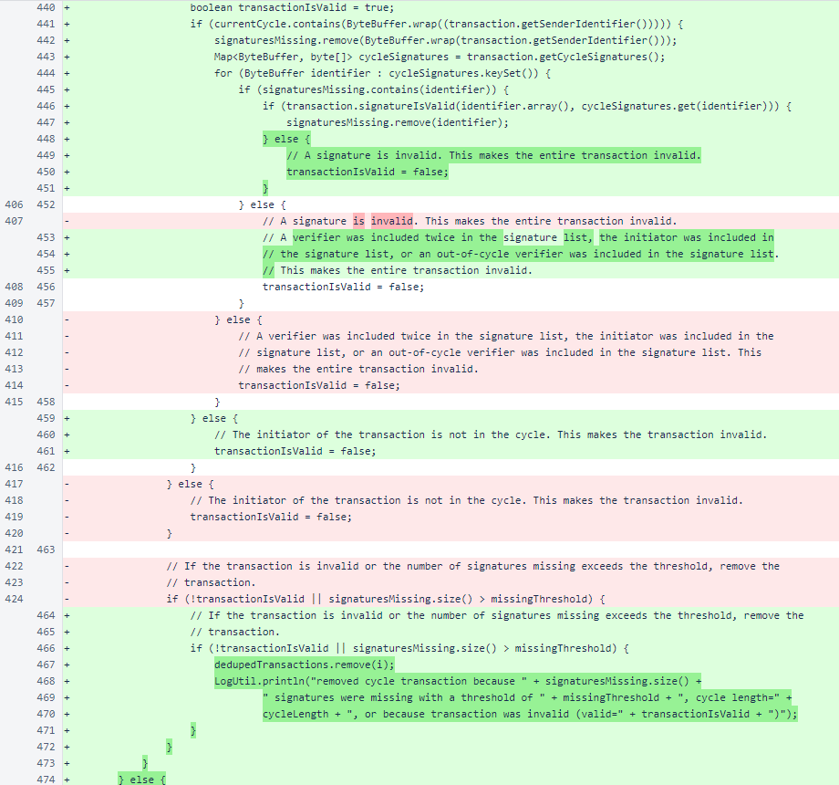Bundling of cycle-transaction signatures is neither required nor permitted past blockchain version 1.
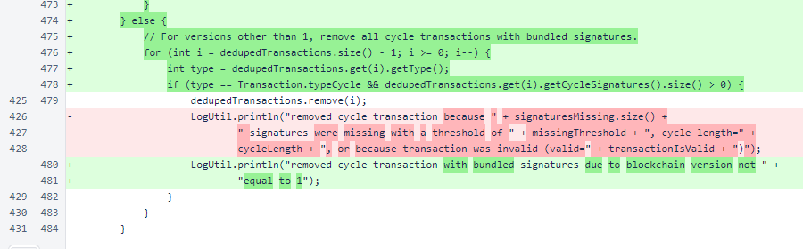The Block class is responsible for deriving balance lists from one block to the next. At the top of this class, constants were added for handling the new ∩100,000 limit on cycle account transfers every 10,000 blocks.
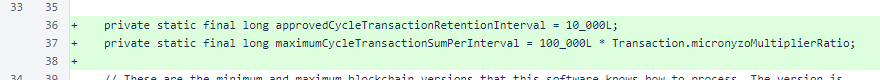The maximumBlockchainVersion increased from 1 to 2.
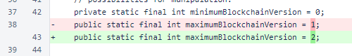In Block.fromByteBuffer(), the call to Transaction.fromByteBuffer() now has another argument. This argument is used to let the Transaction.fromByteBuffer() method know that it is reading a transaction from a balance list.
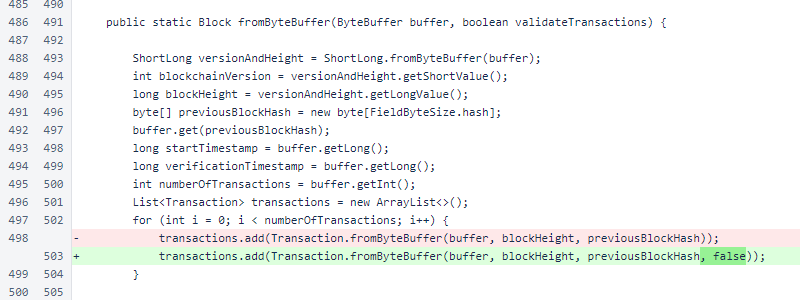In Block.balanceListForNextBlock(), the pendingCycleTransactions map and recentlyApprovedCycleTransactions list are retrieved from the previous balance list. When previousBlock is null, for the Genesis block, these are initialized as empty.
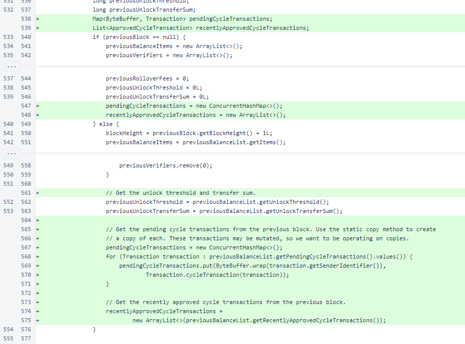In Block.balanceListForNextBlock(), in the loop that updates balances for transactions, cycle transactions are only processed for blockchain version 1. In blockchain version 2, cycle transactions are accepted into the blockchain immediately, but they only result in funds transfer if they are approved by the cycle. This is a single condition added, but it appears to be larger due to indentation changes.
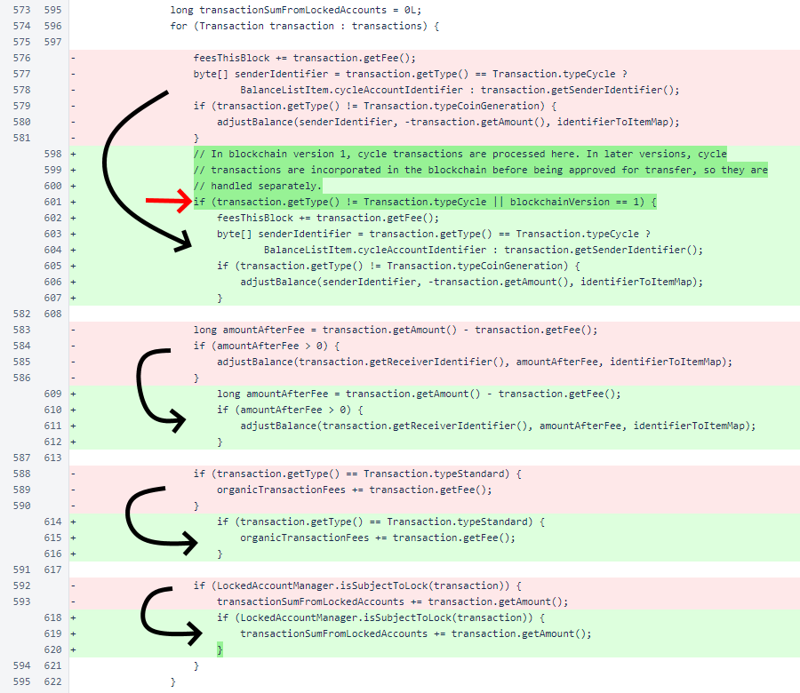After the block of code that processes version 1 cycle transactions, processing of version 2 cycle transactions has been added. The logic was placed in a separate method to avoid making the already lengthy Block.balanceListForNextBlock() method even longer.
The new pendingCycleTransactions and recentlyApprovedCycleTransactions fields are passed to the BalanceList constructor.
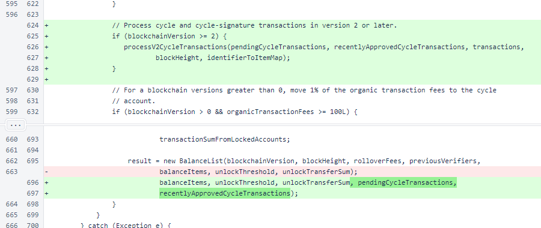Block.processV2CycleTransactions() starts by updating the pendingCycleTransactions map with transactions from the new block. New cycle transactions are added to the map, and transactions from out-of-cycle verifiers are removed. Cycle-signature transactions are attached to the appropriate cycle transactions, and out-of-cycle signatures are removed.
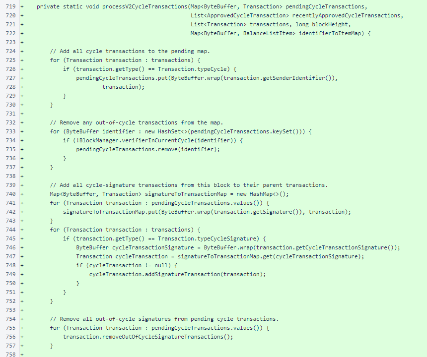The recentlyApprovedCycleTransactions list is used to determine how much of the ∩100,000-per-10,000-block limit has been used. Entries are added to the end of this list, so the oldest entries will be at the beginning of the list. Entries that are no longer relevant are removed. The while loop is not actually necessary — an if statement would be satisfactory because no more than one cycle transaction is processed per block — but the while loop is more robust to potential future logic changes.
Next, the recent transactions are summed to determine how much of the limit is still available. This limit, along with the balance of the cycle account, determine the maximum allowable cycle transaction.
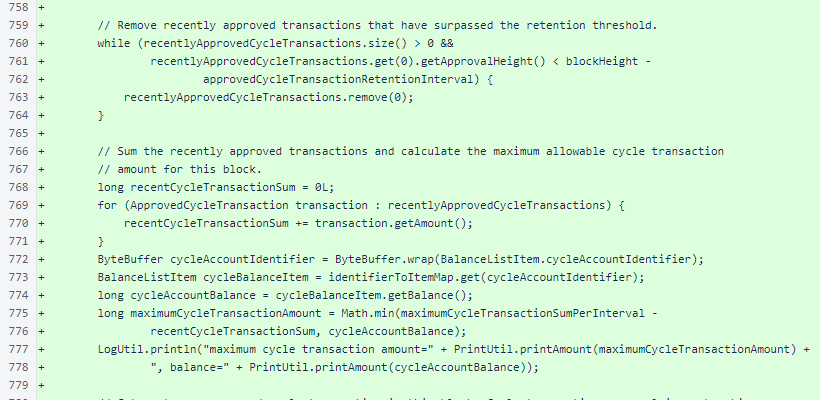The pendingCycleTransactions map is scanned to see if any unprocessed transactions have been approved. To simplify logic, no more than one cycle transaction is processed per block. If a transaction has enough votes is a suitable amount, the number of yes votes is counted. If the number of yes votes meets or exceeds the 50% + 1 threshold, the transaction is selected for processing.
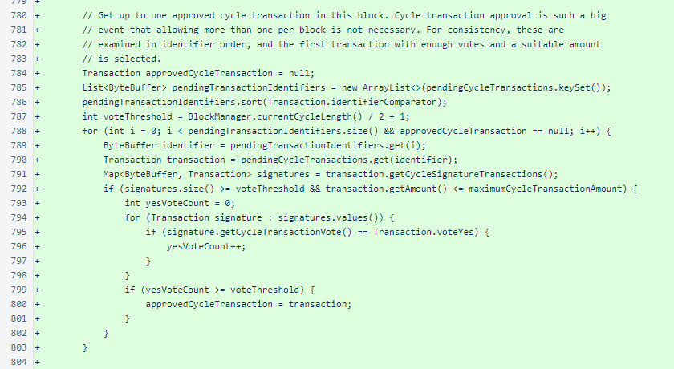When a cycle transaction is approved, it is removed from the pendingCycleTransactions map and added to the recentlyApprovedCycleTransactions list. Then, the amount of the transaction is deducted from the cycle account and added to the receiver's account.
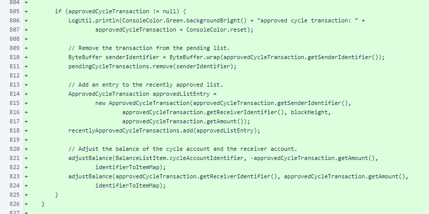BlockchainVersionManager was modified to allow multiple activation heights for different versions. A production activation height of 7,000,000 was added for version 2, as specified in the NTTP-3 implementation plan.
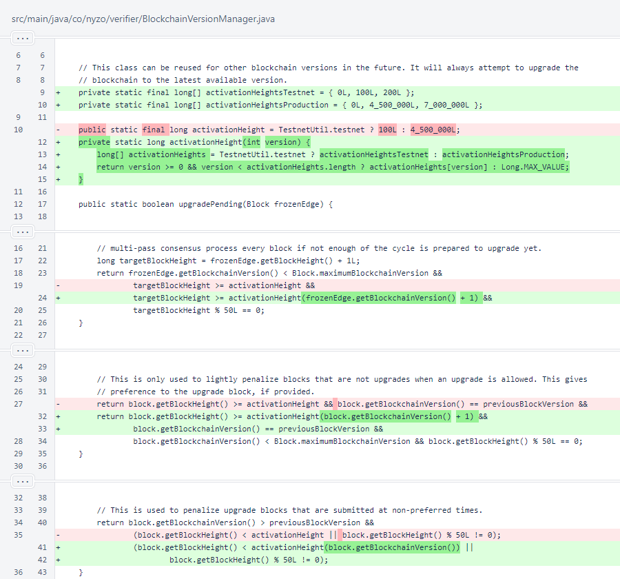In CycleTransactionManager.registerTransaction(), an empty map is passed for the new argument when creating a copy of the transaction without signatures.
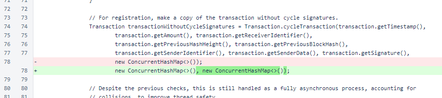In the Transaction, the typeCycleSignature, voteYes, and voteNo constants were added as part of the new transaction-based voting system. The new type of transaction allows storage of the cycleTransactionSignature and a cycleTransactionVote. As transactions are all timestamped, a verifier may vote multiple times for the same cycle transaction, with the newest vote overriding older votes.
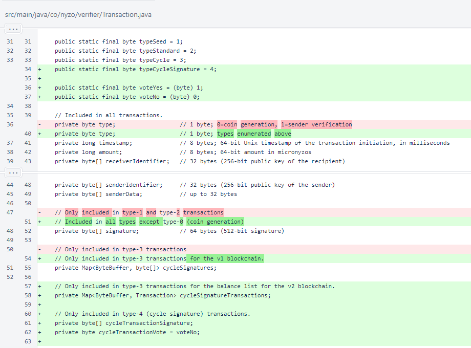The identifierComparator sorts a list of ByteBuffer representations of identifiers. This was previously specified inline for sorting cycle signatures. It was made into a public field to allow reuse.
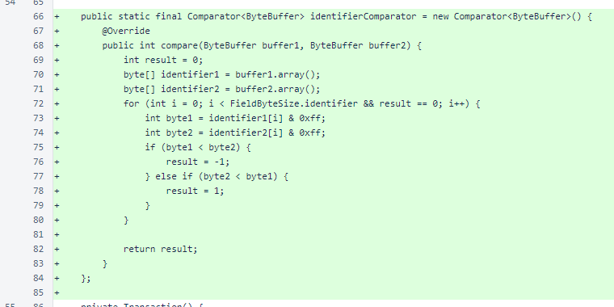Methods were added for adding signatures to the map for cycle transactions, removing signatures of verifiers no longer in the cycle, and accessing the new fields.
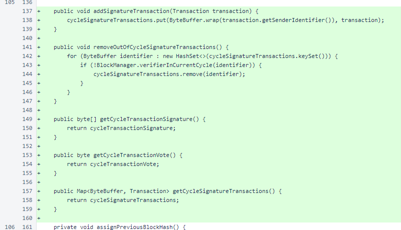A static method was added for copying cycle transactions. In derivation of balance lists, the signature maps are modified, so these are copied internally. The arrays are mutable but never mutated, so they are not copied.
The cycleSignatureTransactions field was added to the cycleTransaction() overload used for rebuilding a serialized cycle transaction.
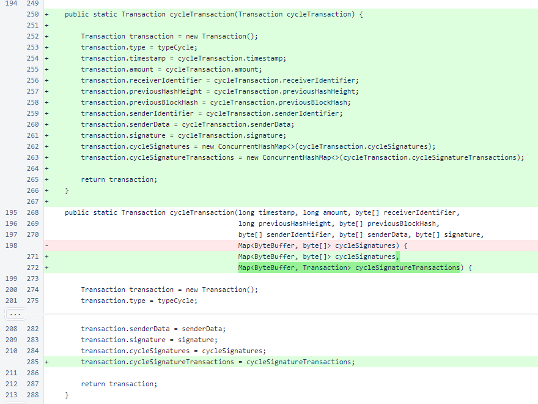In the cycleTransaction() overload used to create a new cycle transaction, and empty map is created for the cycleSignatureTransactions field.
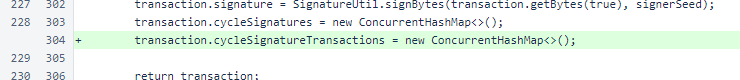Methods were created for building cycle-signature transactions. The first overload is for a new transaction, and the second is for rebuilding a serialized transaction.
In the getFee() method, cycle-signature transactions are explicitly excluded from fees. This is unnecessary, because these transactions always have an amount of 0, but it helps to reinforce the idea that these transactions may be freely submitted by in-cycle verifiers.
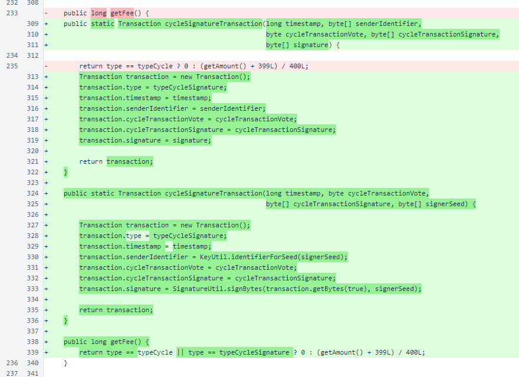The Transaction.getByteSize() method now considers cycle transactions for the version-2 blockchain and cycle-signature transactions.
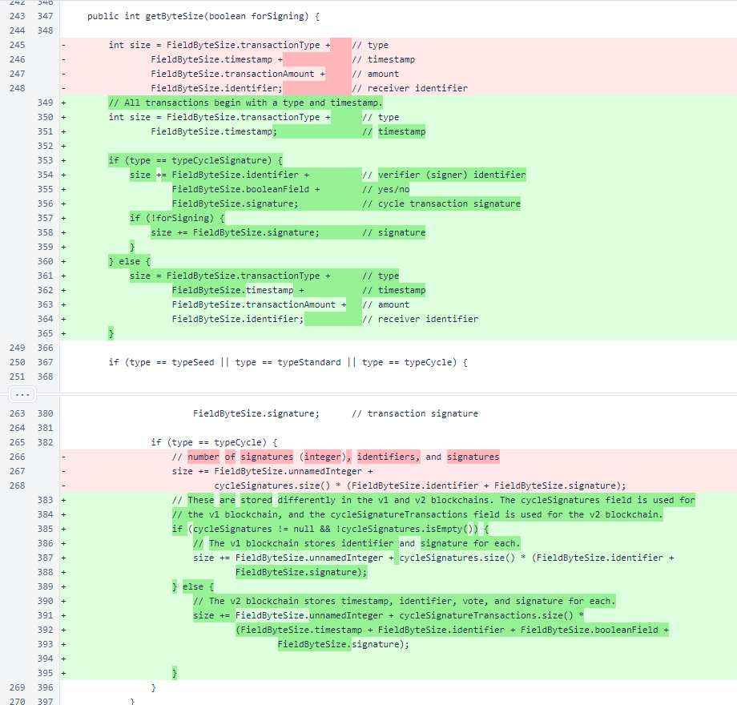The Transaction.getBytes() method now begins with handling of the special case of cycle-signature transactions, which have only the type and timestamp fields in common with other transaction types.
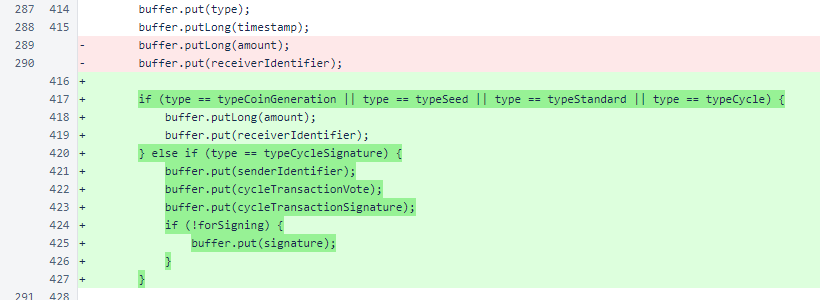Later in Transaction.getBytes(), the cases for version 1 and version 2 cycle transactions are handled appropriately. Each cycle transaction contains values in no more than one of the two signature maps. If both maps are empty, the cycle transaction is compatible with both blockchain version 1 and blockchain version 2.
The identifierComparator is now used instead of the inline comparator.
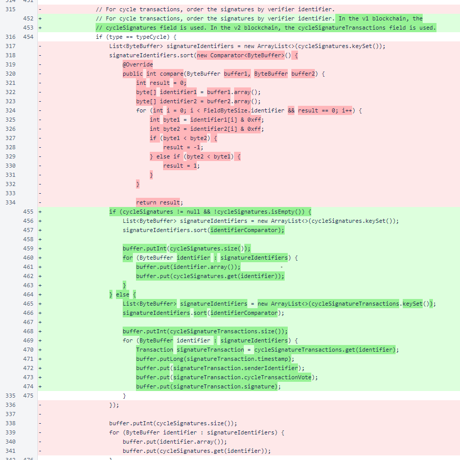When rebuilding a cycle transaction, the method needs to know whether to rebuild a version-1 or version-2 cycle signature list. Fortunately, version-1 cycle signature lists are only contained in blocks, and version-2 cycle signature lists are only contained in balance lists. To provide this information, a boolean argument, balanceListCycleTransaction, was added to the Transaction.fromByteBuffer() method. Some reads were moved inside conditions to allow cycle signature transactions to be properly read, and instances of recipientIdentifier were replaced with receiverIdentifier to make the code more consistent.
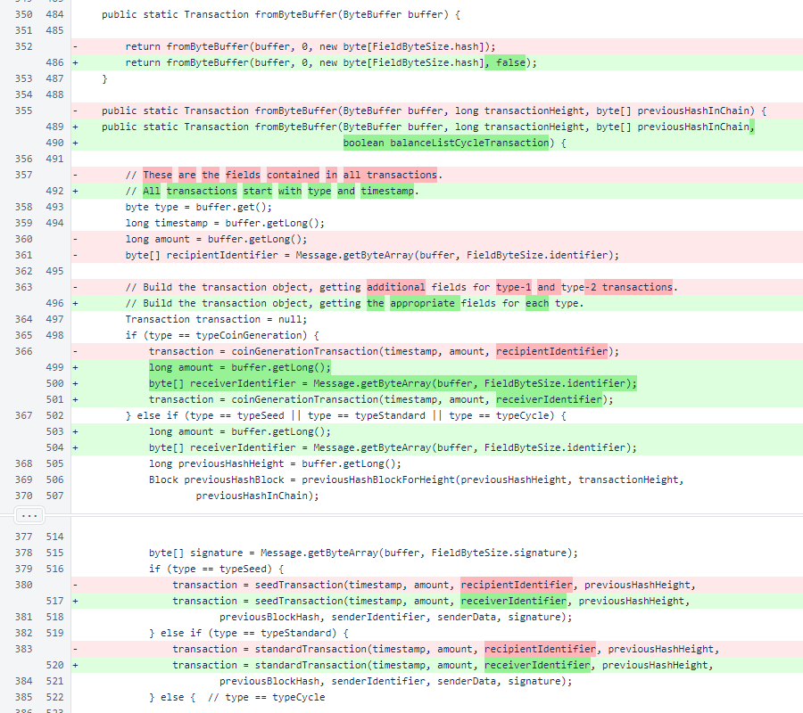Bundled cycle signatures are read according to whether the transaction is being read from a balance list, and the cycle transaction is assembled.
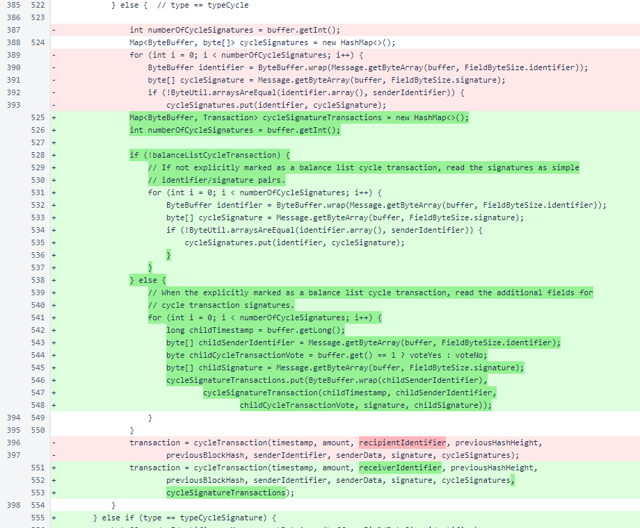Reading of and assembly of cycle signature transactions was added.
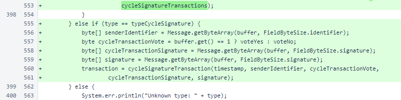In Transaction.performInitialValidation(), considerations were added for cycle-signature transactions.
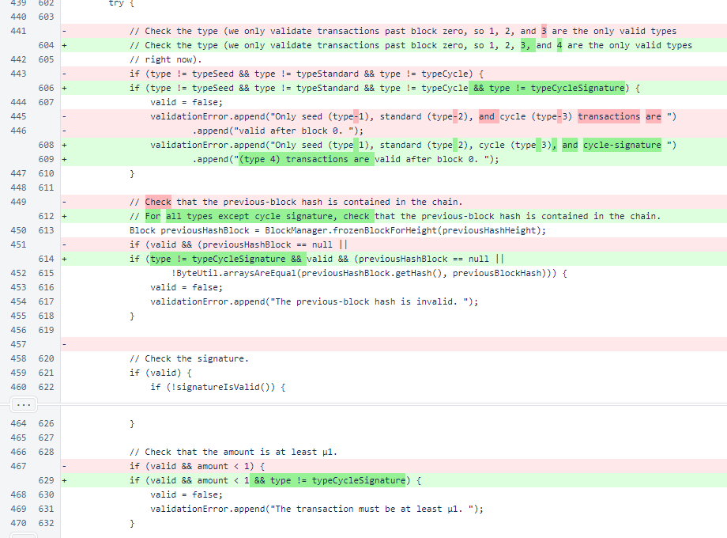In Transaction.signatureIsValid(), consideration was added for cycle-signature transactions.
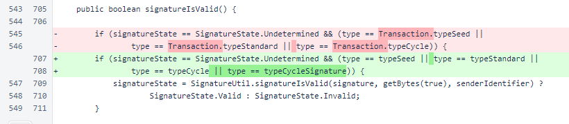In the TransactionResponse constructor, cycle and cycle-signature transactions are added to the transaction pool for blockchain versions 2 and above.
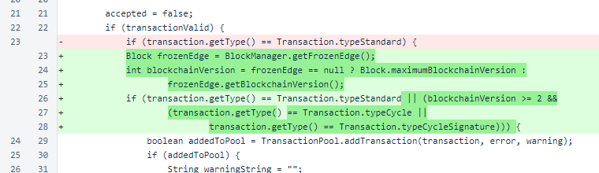